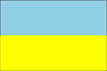

{kind=link}


![[Country map of Ukraine]](../maps/up-map.jpg)
| Ukraine |  |
|
|
|
|
| Introduction |
Background: Richly endowed in natural resources, Ukraine has been fought over and subjugated for centuries; its 20th-century struggle for liberty is not yet complete. A short-lived independence from Russia (1917-1920) was followed by brutal Soviet rule that engineered two artificial famines (1921-22 and 1932-33) in which over 8 million died, and World War II, in which German and Soviet armies were responsible for some 7 million more deaths. Although independence was attained in 1991 with the dissolution of the USSR, true freedom remains elusive as many of the former Soviet elite remain entrenched, stalling efforts at economic reform, privatization, and civic liberties.
| Geography |
Location: Eastern Europe, bordering the Black Sea, between Poland and Russia
Geographic coordinates: 49 00 N, 32 00 E
Map references: Commonwealth of Independent States
Area:
total:
603,700 sq km
land:
603,700 sq km
water:
0 sq km
Area - comparative: slightly smaller than Texas
Land boundaries:
total:
4,558 km
border countries:
Belarus 891 km, Hungary 103 km, Moldova 939 km, Poland 428 km, Romania (south) 169 km, Romania (west) 362 km, Russia 1,576 km, Slovakia 90 km
Coastline: 2,782 km
Maritime claims:
continental shelf:
200-m or to the depth of exploitation
exclusive economic zone:
200 nm
territorial sea:
12 nm
Climate: temperate continental; Mediterranean only on the southern Crimean coast; precipitation disproportionately distributed, highest in west and north, lesser in east and southeast; winters vary from cool along the Black Sea to cold farther inland; summers are warm across the greater part of the country, hot in the south
Terrain: most of Ukraine consists of fertile plains (steppes) and plateaus, mountains being found only in the west (the Carpathians), and in the Crimean Peninsula in the extreme south
Elevation extremes:
lowest point:
Black Sea 0 m
highest point:
Hora Hoverla 2,061 m
Natural resources: iron ore, coal, manganese, natural gas, oil, salt, sulfur, graphite, titanium, magnesium, kaolin, nickel, mercury, timber, arable land
Land use:
arable land:
58%
permanent crops:
2%
permanent pastures:
13%
forests and woodland:
18%
other:
9% (1993 est.)
Irrigated land: 26,050 sq km (1993 est.)
Natural hazards: NA
Environment - current issues: inadequate supplies of potable water; air and water pollution; deforestation; radiation contamination in the northeast from 1986 accident at Chornobyl' Nuclear Power Plant
Environment - international agreements:
party to:
Air Pollution, Air Pollution-Nitrogen Oxides, Air Pollution-Sulphur 85, Antarctic Treaty, Biodiversity, Climate Change, Endangered Species, Environmental Modification, Hazardous Wastes, Law of the Sea, Marine Dumping, Nuclear Test Ban, Ozone Layer Protection, Ship Pollution, Wetlands
signed, but not ratified:
Air Pollution-Persistent Organic Pollutants, Air Pollution-Sulphur 94, Air Pollution-Volatile Organic Compounds, Antarctic-Environmental Protocol, Climate Change-Kyoto Protocol
Geography - note: strategic position at the crossroads between Europe and Asia; second-largest country in Europe
| People |
Population: 49,153,027 (July 2000 est.)
Age structure:
0-14 years:
18% (male 4,482,754; female 4,296,206)
15-64 years:
68% (male 16,018,331; female 17,509,078)
65 years and over:
14% (male 2,243,266; female 4,603,392) (2000 est.)
Population growth rate: -0.83% (2000 est.)
Birth rate: 9.03 births/1,000 population (2000 est.)
Death rate: 16.48 deaths/1,000 population (2000 est.)
Net migration rate: -0.84 migrant(s)/1,000 population (2000 est.)
Sex ratio:
at birth:
1.05 male(s)/female
under 15 years:
1.04 male(s)/female
15-64 years:
0.91 male(s)/female
65 years and over:
0.49 male(s)/female
total population:
0.86 male(s)/female (2000 est.)
Infant mortality rate: 21.67 deaths/1,000 live births (2000 est.)
Life expectancy at birth:
total population:
65.98 years
male:
60.39 years
female:
71.85 years (2000 est.)
Total fertility rate: 1.26 children born/woman (2000 est.)
Nationality:
noun:
Ukrainian(s)
adjective:
Ukrainian
Ethnic groups: Ukrainian 73%, Russian 22%, Jewish 1%, other 4%
Religions: Ukrainian Orthodox - Moscow Patriarchate, Ukrainian Orthodox - Kiev Patriarchate, Ukrainian Autocephalous Orthodox, Ukrainian Catholic (Uniate), Protestant, Jewish
Languages: Ukrainian, Russian, Romanian, Polish, Hungarian
Literacy:
definition:
age 15 and over can read and write
total population:
98%
male:
100%
female:
97% (1989 est.)
| Government |
Country name:
conventional long form:
none
conventional short form:
Ukraine
local long form:
none
local short form:
Ukrayina
former:
Ukrainian Soviet Socialist Republic
Data code: UP
Government type: republic
Capital: Kiev (Kyyiv)
Administrative divisions:
24 oblasti (singular - oblast'), 1 autonomous republic* (avtomnaya respublika), and 2 municipalities (mista, singular - misto) with oblast status**; Cherkas'ka (Cherkasy), Chernihivs'ka (Chernihiv), Chernivets'ka (Chernivtsi), Dnipropetrovs'ka (Dnipropetrovs'k), Donets'ka (Donets'k), Ivano-Frankivs'ka (Ivano-Frankivs'k), Kharkivs'ka (Kharkiv), Khersons'ka (Kherson), Khmel'nyts'ka (Khmel'nyts'kyy), Kirovohrads'ka (Kirovohrad), Kyyiv**, Kyyivs'ka (Kiev), Luhans'ka (Luhans'k), L'vivs'ka (L'viv), Mykolayivs'ka (Mykolayiv), Odes'ka (Odesa), Poltavs'ka (Poltava), Avtonomna Respublika Krym* (Simferopol'), Rivnens'ka (Rivne), Sevastopol'**, Sums'ka (Sumy), Ternopil's'ka (Ternopil'), Vinnyts'ka (Vinnytsya), Volyns'ka (Luts'k), Zakarpats'ka (Uzhhorod), Zaporiz'ka (Zaporizhzhya), Zhytomyrs'ka (Zhytomyr)
note:
oblasts have the administrative center name following in parentheses
Independence: 1 December 1991 (from Soviet Union, by voter approval)
National holiday: Independence Day, 24 August (1991)
Constitution: adopted 28 June 1996
Legal system: based on civil law system; judicial review of legislative acts
Suffrage: 18 years of age; universal
Executive branch:
chief of state:
President Leonid D. KUCHMA (since 19 July 1994)
head of government:
Prime Minister Viktor YUSHCHENKO (since 22 December 1999), First Deputy Prime Minister Yuriy YEKHANUROV (since 30 December 1999), and three deputy prime ministers
cabinet:
Cabinet of Ministers appointed by the president and approved by the Supreme Council
note:
there is also a National Security and Defense Council or NSDC originally created in 1992 as the National Security Council, but significantly revamped and strengthened under President KUCHMA; the NSDC staff is tasked with developing national security policy on domestic and international matters and advising the president; a Presidential Administration that helps draft presidential edicts and provides policy support to the president; and a Council of Regions that serves as an advisory body created by President KUCHMA in September 1994 that includes chairmen of the Kyyiv (Kiev) and Sevastopol' municipalities and chairmen of the oblasti
elections:
president elected by popular vote for a five-year term; election last held 31 October and 14 November 1999 (next to be held NA 2004); prime minister and deputy prime ministers appointed by the president and approved by the People's Council
election results:
Leonid D. KUCHMA elected president; percent of vote - Leonid KUCHMA 56.21%, Petro SYMONENKO 37.77%
Legislative branch:
unicameral Supreme Council or Verkhovna Rada (450 seats; under Ukraine's new election law, half of the Rada's seats are allocated on a proportional basis to those parties that gain 4% of the national electoral vote; the other 225 members are elected by popular vote in single-mandate constituencies; all serve four-year terms)
elections:
last held 29 March 1998 (next to be held NA 2002)
election results:
percent of vote by party (for parties clearing 4% hurdle on 29 March 1998) - Communist 24.7%, Rukh (combined) 9.4%, Socialist/Peasant 8.6%, Green 5.3%, People's Democratic Party 5.0%, Hromada 4.7%, Progressive Socialist 4.0%, United Social Democratic Party 4.0%; seats by faction (as of 25 February 2000) - Communist 115, PRVU 36, Fatherland Party 35, United Social Democratic 34, People's Democratic Party 27, Trudova Ukrayina 27, Rukh (K) 27, left-center 23, Green 18, Rukh (U) 17, Peasant Party 15, Hromada 14, Reforms Congress 12, independents 14, unaffiliated 31, vacant 5
Judicial branch: Supreme Court; Constitutional Court
Political parties and leaders:
Agrarian Party of Ukraine or APU [Mykhaylo HLADIY, chairperson]; Communist Party of Ukraine [Petro SYMONENKO]; Fatherland (Motherland) All Ukrainian Party [Yuliya TYMOSHENKO, chairperson]; Green Party of Ukraine or PZU [Vitaliy KONONOV, chairman]; Hromada [Pavlo LAZARENKO]; Liberal Party of Ukraine or LPU [Volodymyr SHCHERBAN]; Party of Regional Revival of Ukraine or PRVU [Volodymyr RYBAK]; Peasant Party of Ukraine or SelPU [Serhiy DOVHAN]; People's Democratic Party [Valeriy PUSTOVOYTENKO, chairman]; People's Movement of Ukraine or Rukh U [Hennadiy UDOVENKO, chairman]; Progressive Socialist Party [Nataliya VITRENKO]; Reforms Congress [leader NA]; Reforms and Order Party [Viktor PYNZENYK]; Sobor Party [Anatoliy MATVIYENKO, chairman]; Social Democratic Party of Ukraine (United) [Viktor MEDVEDCHUK, chairman]; Socialist Party of Ukraine or SPU [Oleksandr MOROZ, chairman]; Trudova Ukrayina/Working Ukraine [Igor SHAROV, chairman]; Ukrainian Popular Movement or Rukh K [Yuriy KOSTENKO, chairman]; United Social Democratic Party of Ukraine [Viktor MEDVEDCHUK]; Yabluko Party [Viktor CHAYKA, chairman]
note:
and numerous smaller parties
International organization participation: BSEC, CCC, CE, CEI, CIS, EAPC, EBRD, ECE, IAEA, IBRD, ICAO, ICRM, IFC, IFRCS, IHO, ILO, IMF, IMO, Inmarsat, Intelsat (nonsignatory user), Interpol, IOC, IOM (observer), ISO, ITU, NAM (observer), NSG, OAS (observer), OPCW, OSCE, PCA, PFP, UN, UN Security Council (temporary), UNCTAD, UNESCO, UNIDO, UNMIBH, UNMIK, UNMOP, UNMOT, UPU, WFTU, WHO, WIPO, WMO, WToO, WTrO (applicant), ZC
Diplomatic representation in the US:
chief of mission:
Ambassador Konstantin Ivanovych HRYSHCHENKO
chancery:
3350 M Street NW, Washington, DC 20007
telephone:
[1] (202) 333-0606
FAX:
[1] (202) 333-0817
consulate(s) general:
Chicago and New York
Diplomatic representation from the US:
chief of mission:
Ambassador Steven Karl PIFER
embassy:
10 Yuria Kotsubynskoho, 254053 Kiev 53
mailing address:
use embassy street address
telephone:
[380] (44) 246-9750
FAX:
[380] (44) 244-7350
Flag description: two equal horizontal bands of azure (top) and golden yellow represent grainfields under a blue sky
| Economy |
Economy - overview: After Russia, the Ukrainian republic was far and away the most important economic component of the former Soviet Union, producing about four times the output of the next-ranking republic. Its fertile black soil generated more than one-fourth of Soviet agricultural output, and its farms provided substantial quantities of meat, milk, grain, and vegetables to other republics. Likewise, its diversified heavy industry supplied equipment and raw materials to industrial and mining sites in other regions of the former USSR. Ukraine depends on imports of energy, especially natural gas. Shortly after the implosion of the USSR in December 1991, the Ukrainian Government liberalized most prices and erected a legal framework for privatization, but widespread resistance to reform within the government and the legislature soon stalled reform efforts and led to some backtracking. Output in 1992-99 fell to less than 40% the 1991 level. Loose monetary policies pushed inflation to hyperinflationary levels in late 1993. Since his election in July 1994, President KUCHMA has pushed economic reforms, maintained financial discipline, and tried to remove almost all remaining controls over prices and foreign trade. The onset of the financial crisis in Russia dashed Ukraine's hopes for its first year of economic growth in 1998 due to a sharp fall in export revenue and reduced domestic demand. Output continued to drop, slightly, in 1999. The government has also not been able to significantly decrease its huge backlog of wage and pension arrears. Despite increasing pressure from the IMF to accelerate reform, substantial economic restructuring remains unlikely in 2000, largely because of resistance in the communist-dominated legislature to further privatization.
GDP: purchasing power parity - $109.5 billion (1999 est.)
GDP - real growth rate: -0.4% (1999 est.)
GDP - per capita: purchasing power parity - $2,200 (1999 est.)
GDP - composition by sector:
agriculture:
12%
industry:
26%
services:
62% (1998 est.)
Population below poverty line: 50% (1999 est.)
Household income or consumption by percentage share:
lowest 10%:
4.1%
highest 10%:
20.8% (1992)
Inflation rate (consumer prices): 20% (1999 est.)
Labor force: 22.8 million (yearend 1997)
Labor force - by occupation: industry and construction 32%, agriculture and forestry 24%, health, education, and culture 17%, trade and distribution 8%, transport and communication 7%, other 12% (1996)
Unemployment rate: 4.3% officially registered; large number of unregistered or underemployed workers (December 1999)
Budget:
revenues:
$8.3 billion
expenditures:
$8.8 billion, including capital expenditures of $NA (1999 est.)
Industries: coal, electric power, ferrous and nonferrous metals, machinery and transport equipment, chemicals, food-processing (especially sugar)
Industrial production growth rate: 4.3% (1999 est.)
Electricity - production: 171 billion kWh (1999)
Electricity - production by source:
fossil fuel:
52%
hydro:
5.9%
nuclear:
42.1%
other:
0% (1999)
Electricity - consumption: 144.011 billion kWh (1998)
Electricity - exports: 7 billion kWh (1998)
Electricity - imports: 4.15 billion kWh (1998)
Agriculture - products: grain, sugar beets, sunflower seeds, vegetables; beef, milk
Exports: $11.6 billion (1999 est.)
Exports - commodities: ferrous and nonferrous metals, fuel and petroleum products, machinery and transport equipment, food products
Exports - partners: Russia 20%, EU 17%, China 7%, Turkey 6%, US 4% (1999)
Imports: $11.8 billion (1999 est.)
Imports - commodities: energy, machinery and parts, transportation equipment, chemicals
Imports - partners: Russia 48%, EU 23%, US 3% (1999)
Debt - external: $12.6 billion (January 2000 est.)
Economic aid - recipient: $637.7 million (1995); IMF Extended Funds Facility $2.2 billion (1998)
Currency: 1 hryvna = 100 kopiykas
Exchange rates: hryvnia per US$1 - 5.59 (February 2000), 5.3811 (January 2000), 4.1304 (1999), 2.4495 (1998), 1.8617 (1997), 1.8295 (1996), 1.4731 (1995)
Fiscal year: calendar year
| Communications |
Telephones - main lines in use: 9.45 million (April 1999)
Telephones - mobile cellular: 236,000 (1998)
Telephone system:
Ukraine's telecommunication development plan, running through 2005, emphasizes improving domestic trunk lines and international connections, and developing a mobile cellular system
domestic:
at independence in December 1991, Ukraine inherited a telephone system that was antiquated, inefficient and in disrepair; more than 3.5 million applications for telephones could not be satisfied; telephone density is now rising slowly and the domestic trunk system is being improved; from a small base, the mobile cellular telephone system is expanding at a high rate
international:
two new domestic trunk lines are a part of the fiber-optic Trans-Asia-Europe (TAE) system and three Ukrainian links have been installed in the fiber-optic Trans-European Lines (TEL) project which connects 18 countries; additional international service is provided by the Italy-Turkey-Ukraine-Russia (ITUR) fiber-optic submarine cable and by earth stations in the Intelsat, Inmarsat, and Intersputnik satellite systems
Radio broadcast stations: AM 134, FM 289, shortwave 4 (1998)
Radios: 45.05 million (1997)
Television broadcast stations: at least 33 (plus 21 repeater stations that relay broadcasts from Russia) (1997)
Televisions: 18.05 million (1997)
Internet Service Providers (ISPs): 35 (1999)
| Transportation |
Railways:
total:
23,350 km
broad gauge:
23,350 km 1.524-m gauge (8,600 km electrified)
Highways:
total:
176,310 km
paved:
170,139 km (including 1,770 km of expressways); note - these roads are said to be hard-surfaced, meaning that some are paved and some are all-weather gravel-surfaced
unpaved:
6,171 km (1998 est.)
Waterways: 4,400 km navigable waterways, of which 1,672 km were on the Pryp'yat' and Dnistr (1990)
Pipelines: crude oil 4,000 km (1995); petroleum products 4,500 km (1995); natural gas 34,400 km (1998)
Ports and harbors: Berdyans'k, Illichivs'k, Izmayil, Kerch, Kherson, Kiev (Kyyiv), Mariupol', Mykolayiv, Odesa, Reni
Merchant marine:
total:
156 ships (1,000 GRT or over) totaling 862,690 GRT/963,550 DWT
ships by type:
bulk 9, cargo 105, container 4, passenger 11, passenger/cargo 3, petroleum tanker 14, rail car carrier 2, roll-on/roll-off 5, short-sea passenger 3 (1999 est.)
Airports: 706 (1994 est.)
Airports - with paved runways:
total:
163
over 3,047 m:
14
2,438 to 3,047 m:
55
1,524 to 2,437 m:
34
914 to 1,523 m:
3
under 914 m:
57 (1994 est.)
Airports - with unpaved runways:
total:
543
over 3,047 m:
7
2,438 to 3,047 m:
7
1,524 to 2,437 m:
16
914 to 1,523 m:
37
under 914 m:
476 (1994 est.)
| Military |
Military branches: Army, Navy, Air Force, Air Defense Force, Internal Troops, National Guard, Border Troops
Military manpower - military age: 18 years of age
Military manpower - availability:
males age 15-49:
12,311,052 (2000 est.)
Military manpower - fit for military service:
males age 15-49:
9,645,925 (2000 est.)
Military manpower - reaching military age annually:
males:
373,595 (2000 est.)
Military expenditures - dollar figure: $500 million (FY99)
Military expenditures - percent of GDP: 1.4% (FY99)
| Transnational Issues |
Disputes - international: dispute with Romania over continental shelf of the Black Sea under which significant gas and oil deposits may exist; agreed in 1997 to two-year negotiating period, after which either party can refer dispute to the ICJ; has made no territorial claim in Antarctica (but has reserved the right to do so) and does not recognize the claims of any other nation
Illicit drugs: limited cultivation of cannabis and opium poppy, mostly for CIS consumption; some synthetic drug production for export to West; limited government eradication program; used as transshipment point for opiates and other illicit drugs from Africa, Latin America, and Turkey, and to Europe and Russia; drug-related money laundering a minor, but growing, problem